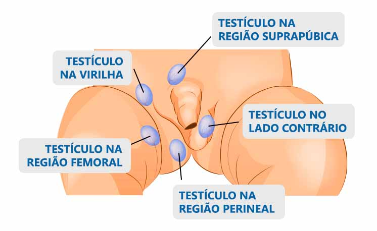
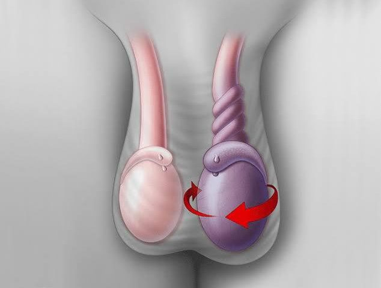
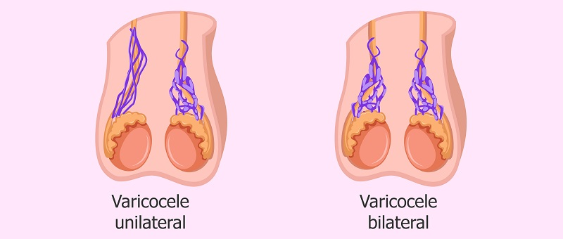

CRIPTORQUIDIA
A criptorquidia (ou “testículos não descidos”) é a ausência de um ou dois testículos na bolsa escrotal. Os testículos são formados dentro do abdômen normalmente durante o período embrionário, porém, não alcançam o saco escrotal. Existem dois tipos de criptorquidia: congênita, quando a doença é diagnosticada ao nascimento, e adquirida, quando um ou os dois testículos previamente posicionados no saco escrotal voltam para dentro do corpo.
Segundo o Portal da Urologia (2018), essa doença acomete cerca de 4% das crianças do sexo masculino nascidas em tempo normal, e aproximadamente 45% das nascidas prematuramente. As causas ainda não são claras, mas é possível que fatores ambientais durante a gestação, predisposição genética e disfunções hipatalâmico-hipofisárias influenciem o aparecimento desta condição. As consequências da criptorquidia incluem infertilidade e um risco maior de tumores no testículo acometido.
O tratamento utilizado é a intervenção cirúrgica, tanto para posicionar corretamente o testículo ou, em casos mais graves, remoção de um ou dois testículos. Existe a possibilidade de terapia hormonal, porém, os resultados não são garantidos.
TORÇÃO TESTICULAR
A torção testicular pode ocorrer em qualquer período da vida, mas é mais comum entre os 12 e 18 anos de idade. A torção exprime nervos, vasos sanguíneos e linfáticos, reduzindo a irrigação sanguínea do testículo e causando uma dor intensa na região abdominal, podendo ocasioanar vômitos. A torção pode ocorrer, principalmente, quando o cordão espermático ainda não foi fixado completamente durante o amadurecimento, o tornando mais “solto”, ou por movimentos bruscos violentos. Geralmente, a torção ocorre durante o sono ou em períodos de atividade física intensa.
É recomendado intervenção médica imediatamente após a torção, pois grandes períodos sem irrigação sanguínea podem levar à perda de um ou dois testículos, causando infertilidade e possíveis infeccções no local. Porém, existem casos em que a torção é desfeita com o tempo. Essa variação da gravidade depende do ângulo da torção.
VARICOCELE
A varicocele é a ditalação das veias testiculares que ocorre quando as válvulas venosas (responsáveis por propulsionar o sangue de volta ao coração) não funcionam corretamente, causando um refluxo venoso. Esse tipo de condição é muito comum, e também é a causadora de varizes e hemorróidas, que geralmente acompanham a varicocele.
A varicocele é uma das causas mais comuns de infertilidade masculina, sendo, muitas vezes, hereditária. Existem três graus de varicocele, porém, somente os graus II e III podem afetar a produção de espermatozóides. Nesses casos, é comum que o testículo diminua de tamanho. A varicocele é congênita, mas geralmente se manifesta no início da puberdade, podendo prejudicar o desenvolvimento de um ou dois testículos caso não seja tratada, além de dores e descorforto na região durante atividades físicas.
O tratamento inclui o uso de suspensório escrotal e medicamentos antinflamatórios. Porém, dependendo da gravidade, será necessário realizar uma cirurgia no local afetado.